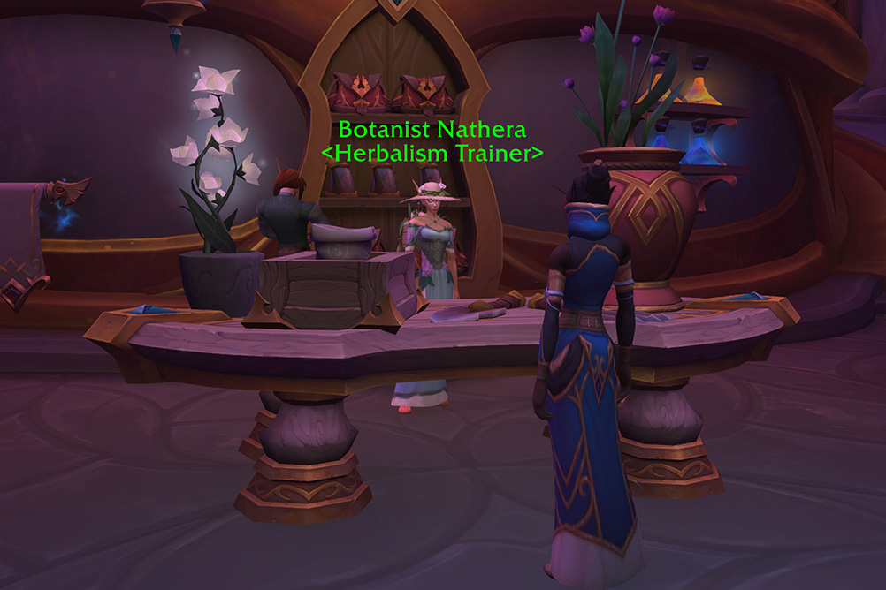
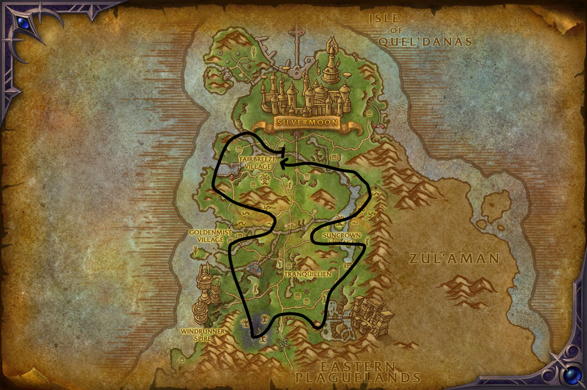
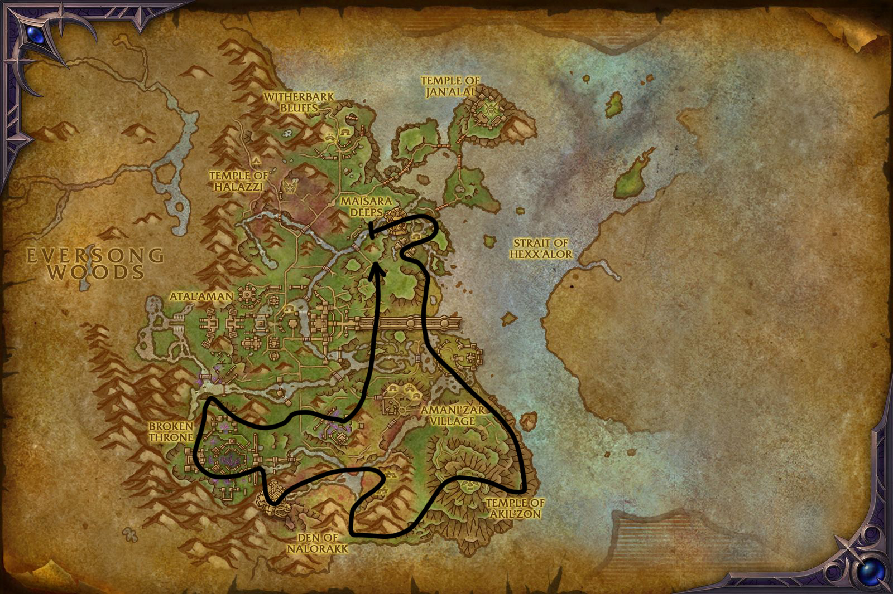
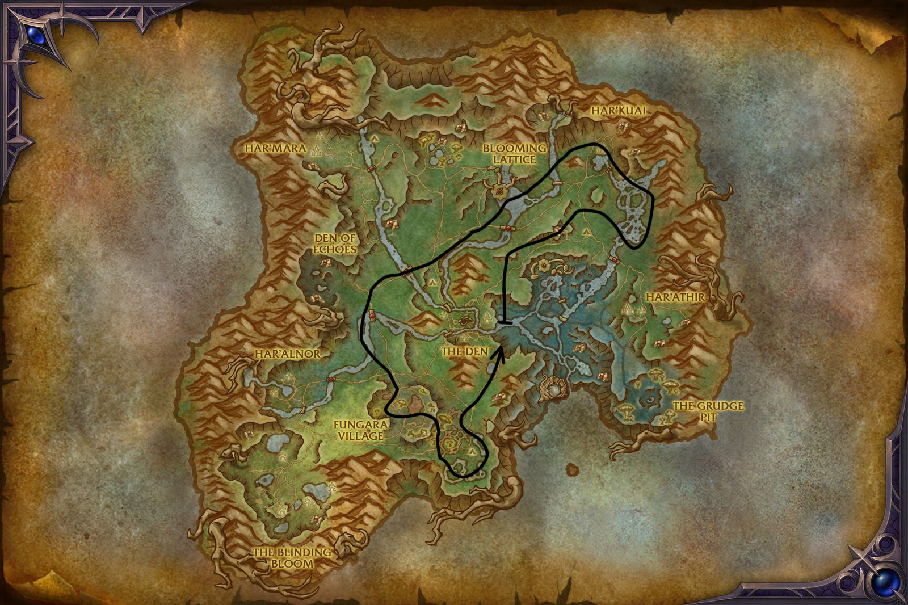
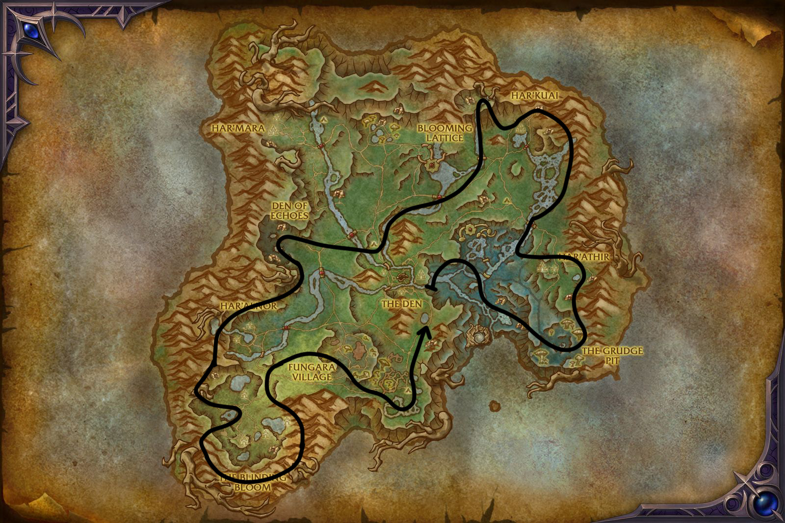
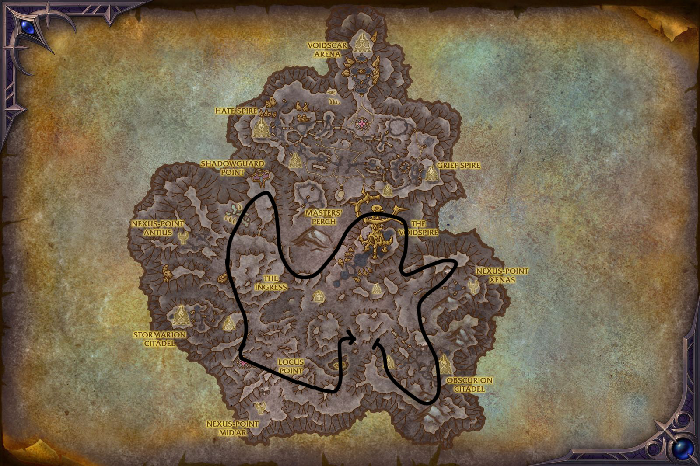

This Midnight Herbalism guide covers everything you need to level from 1 to 100 and farm herbs efficiently. You'll find the best farming routes for every zone, skill ranges, how infused herbs and overloading work, which profession equipment and consumables to use, and how Deftness, Finesse, and Perception affect your gathering.
This Midnight Herbalism guide covers everything you need to level from 1 to 100 and farm herbs efficiently. You'll find the best farming routes for every zone, skill ranges, how infused herbs and overloading work, which profession equipment and consumables to use, and how Deftness, Finesse, and Perception affect your gathering.
Specializations & Knowledge Points
This guide only focuses on leveling and farming. I have a separate guide that covers all Knowledge Point sources, treasure locations with maps, and specialization builds:
Specialization Builds & Knowledge Guide
What Changed in Midnight
If you gathered herbs in The War Within, here's what's different in Midnight.
- Two Qualities Only - Herbs now only have two quality levels (Silver and Gold) instead of three. Bronze quality is gone entirely.
- Artisan Herbalist's Moxie - The shared
 Artisan's Acuity currency from The War Within has been replaced by a profession-specific currency,
Artisan's Acuity currency from The War Within has been replaced by a profession-specific currency,  Artisan Herbalist's Moxie. You can now only spend it on Herbalism-related items.
Artisan Herbalist's Moxie. You can now only spend it on Herbalism-related items. - Epic Profession Tools - New Epic-quality gathering tools are available with more secondary stats than Rare tools, but they give the same skill bonus.
Herbalism Trainer
You can learn Midnight Herbalism from Botanist Nathera in Silvermoon City.

Profession Equipment
Herbalism profession equipment now includes an Epic tier. There's no primary skill difference between Blue and Epic pieces. The only difference is the secondary stat amount.
You have three equipment slots: Hat, Satchel, and Sickle. The Hat is an accessory from Tailoring, the Satchel is an accessory from Leatherworking, and the Sickle is a tool from Blacksmithing.
Silverleaf Thread is sold by vendors, so if you are submitting Crafting Orders, you can buy them from the Leatherworking supply vendor near your trainer.
Customizing Profession Tool stats
Accessory stats are fixed, so just get the highest quality you can. Profession tool stats can be customized with missives. For green gear, it's usually best to just buy one with the correct stats, but for blue and epic you need to put the right missive in the optional reagent slot when crafting or submitting a crafting order. Don't forget to enchant your Tool too.
| Stat | Missive | Enchant |
|---|---|---|
| Deftness | ||
| Finesse | ||
| Perception |
Finesse, Deftness or Perception for Herbalism?
The three secondary stats work the same as before. Deftness increases gathering speed, Finesse gives you extra materials from each node, and Perception gives you a chance to find extra Nocturnal Lotus when one drops. It doesn't increase the base drop chance, just the bonus amount when one does drop.
For tools, get one with Finesse or Deftness. I don't think Perception is worth it unless Nocturnal Lotus is selling for crazy prices.
In some Midnight zones it's really hard to avoid mobs while gathering, so I'd recommend getting enough Deftness to gather without fighting.
With the consumables listed below you can hit a comfortable Deftness level and just stack Finesse after that. If mobs are still interrupting you, get a Deftness tool with Deftness enchant too.
Consumables
Using Azeroot Tea and Darkmoon Firewater makes gathering feel much smoother. I'd say they're mandatory for effective farming until you have more Deftness from gear or specialization.
| Consumable | Effect | Duration |
|---|---|---|
| Haranir Phial of Perception | +38 Perception (+3.8%), +11 Deftness (+3.6%) | 30min |
| Haranir Phial of Finesse | +38 Finesse (+3.8%), +11 Deftness (+3.6%) | 30min |
| Argentleaf Tea | +50 Finesse (+5.0%) | 1 hour |
| Sanguithorn Tea | +50 Perception (+5.0%) | 1 hour |
| Azeroot Tea | +50 Deftness (+16.6%) | 1 hour |
| Darkmoon Firewater | +15% Deftness | 1 hour |
| Refulgent Razorstone | +43 Finesse (+4.3%) for gathering tools | 2 hours |
Infused Herbs & Overloading
While gathering, you'll come across infused versions of regular herbs. They have a glowing visual effect and drop extra materials (motes), but they also hit you with a negative effect when you pick them.
How to get the Overloading spell
Once you gather an Infused Herb for the first time, you learn the Overload Infused Herb ability. You can use it near an infused herb to trigger a bonus effect. The cooldown is 12 hours, but it's reduced by 30 minutes every time you gather a Midnight herb. That means roughly 24 herbs to fully reset the cooldown.
This usually gets added to your action bar automatically, but if you don't see it, you can find it in your spellbook under the General tab. It's not in the profession spellbook. It's in the normal one.
List of infused herbs by zone
There are a few Lightfused in certain parts of Harandar, and there are a few Voidbound in Eversong Woods and Zul'Aman, but the vast majority are in the zones listed below.
| Herb Type | Zone | Mote |
|---|---|---|
| Lightfused | Eversong Woods | |
| Wild | Zul'Aman | |
| Primal | Harandar | |
| Voidbound | Voidstorm |
Overloading
Using Overload Infused Herb on an infused herb gives you a bonus effect depending on the type.
| Herb Type | Normal Gather | Overload |
|---|---|---|
| Lightfused | Light circles appear on the ground. Stand in them to get extra motes. | Even more light circles spawn on the ground. It's pretty hard to catch all of them, so you'll probably miss a few. |
| Wild | Four herb creatures spawn. Kill them and use Herbalism on their corpses to get extra motes. | An elite creature spawns. Killing it gives you a 150 Perception buff for 5 minutes. No extra motes. The elite is pretty tough if you have bad gear. |
| Primal | Nothing extra outside the normal gather. You get a minor slow and DoT. | You channel 50% of your HP to get extra motes. Don't interrupt the channel! It seems that mobs won't interrupt you, but the HP drain can actually kill you, so make sure you're above 50%. |
| Voidbound | Nothing extra. A void zone pulls you in, but nothing really happens. Just walk out. | A portal appears along with 4 purple orbs. Run into the orbs quickly or they disappear. You get motes and ores for each one. The portal just teleports you to random places. It's just not worth using in its current form. |
Herbalism Farming Routes
I'd recommend starting in Eversong Woods since it has the most straightforward terrain and lower mob density. Once you're comfortable, move to the other zones for variety and to trigger first-gather Knowledge bonuses from new herb types.
Don't follow these routes strictly, just use them as a general guideline and feel free to explore the zones. The routes are designed to hit the main herb nodes in each zone, but there are also herbs that spawn outside of the routes, so it's good to explore and find your own paths too.
Skill Ranges
Normal herbs give skill points early on, but they stop being useful around the halfway mark. After that, you need infused herbs to keep gaining skill.
1 - 30: Pretty much everything gives skill points. You'll reach 30 fast just by picking whatever you find. Tranquility Bloom stops giving skill at 30, but the rest carry you further.
30 - 60: The other four base herbs (Sanguithorn, Azeroot, Argentleaf, Mana Lily) go yellow at 30 and grey at 60. Lush and Infused variants also give skill here.
60 - 100: All base herbs are grey. Only Lush and Infused variants give skill now (yellow at 60, grey at 100). They spawn randomly in place of normal herbs, so just keep gathering and you'll find them.
One of the easiest to follow routes, it's basically a loop around the whole zone, with a short detour through the middle on each side to catch the nodes there.

Gathering in Zul'Aman is not recommended if you want to level your character with gathering only, or you will have to get some gear upgrades along the way. Infused Wild herbs and Ores summon mobs that can be tough to kill if you don't have good gear.
This is the route I use for farming for both herbalism and mining, so it's good for double gatherers. Maisara Deers have some elite mobs so sometimes you won't be able to kill the summoned infused mobs there. High deftness is recommended to avoid fighting mobs.
Overloading tip: I don't recommend using your Overload cooldown on Wild deposits here, as the spawned elite doesn't drop extra motes and the Perception buff is not that great. Save it for the occasional Voidbound deposits you find along the route instead.

Harandar is probably the most annoying zone that I ever farmed in. There are a lot of herbs on top of mushrooms and roots that are just annoying to get to. You have to move a lot vertically up and down, also mobs almost everywhere.
I try to generally make routes that avoid all or most mobs, but it was pretty hard in Harandar, so these routes do have a lot of mobs in them. High deftness is recommended to avoid fighting mobs.
Herbalism Route
I've come up with this farming route that avoids some of the more annoying places and still hits a good amount of herbs.

Double Gathering Route
Now, you can use the first route if you also have mining it's still decent, but this one hits more ores. There are a lot of vertical up and down movements, so this route is not for everyone, but it's pretty good if you want to maximize your gathering in Harandar. If you find this annoying just stick to the first one and maybe add some parts from this route that you don't find that annoying.
If you are double gathering, you could probably just fly in random direction in the zone and still get decent amount of herbs and ores, but if you want a more structured route, this is the one I used.

This zone probably has the highest mob density around nodes, so sometimes even with high deftness you have to try multiple times to get a herb. (just spam right click)
The zone is pretty rough to make a route for since the layout is all over the place. What I found works best is flying around the edge of the map and staying near the middle, since those areas seem to have much lower mob density. High deftness is recommended to avoid fighting mobs.
Don't follow these lines exactly, it's just basically the direction where you should be heading but then you can just zig-zag and fly around. But, also if you just go in a straight line around the edge of the map you will probably get a good amount of herbs too, since the nodes are pretty dense in this zone, so it's not really about following a specific route.
